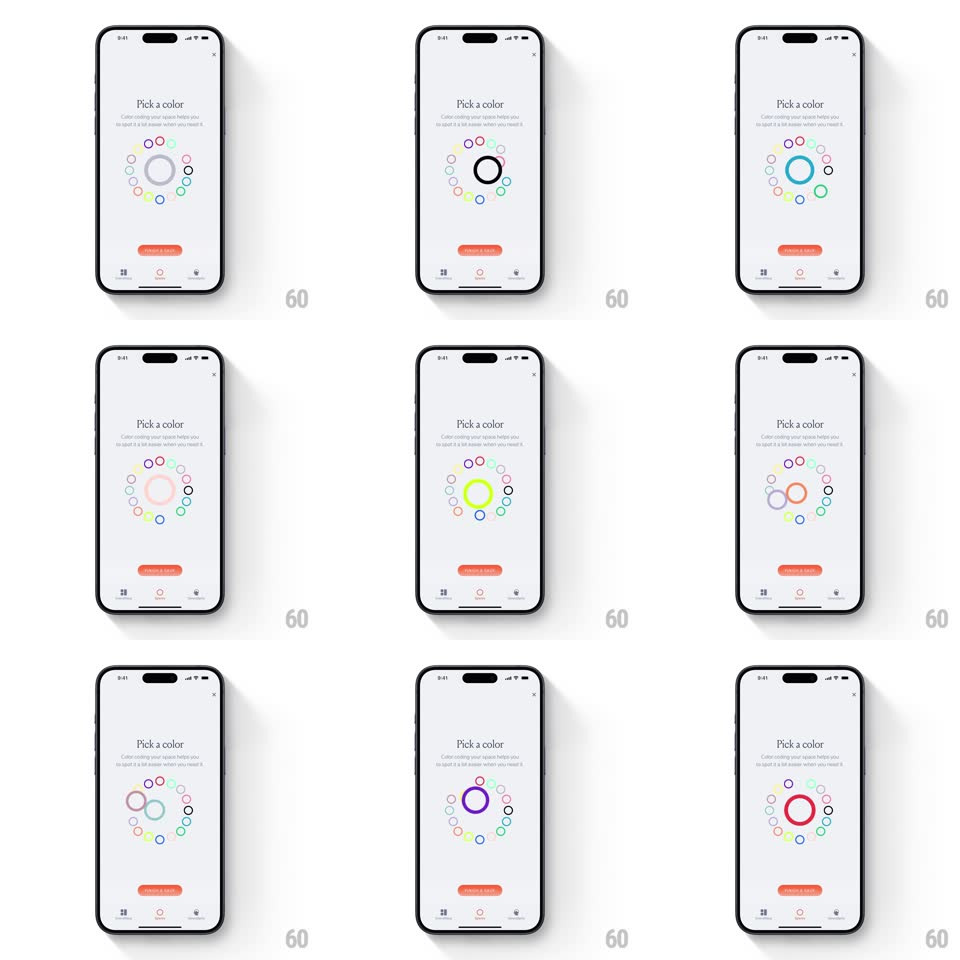

Media
Frame-by-frame

Rebuild this interaction 1:1: mymind's Spaces color picker - a ring of small colored circles around a big central preview; tapping a color slides a selection ring to it and springs the center circle into the new color.

Rebuild this interaction 1:1: mymind's Spaces color picker - a ring of small colored circles around a big central preview; tapping a color slides a selection ring to it and springs the center circle into the new color. ## Integration Integration: stack-agnostic spec - springs given as stiffness/damping, timed motions as duration + curve; map every value to your framework and animation library of choice. ## Scene Light sheet: "Pick a color" serif title with a one-line explainer, a large circle of ~16 small color dots arranged in a ring, a big central circle showing the current color, and a coral "Create a space" pill pinned above the tab bar. ## Motion spec Pattern: radial color picker with sliding selection ring. - Tap a dot: a thin selection ring slides along the ring path from the previous dot to the tapped one (arc motion along the circle, spring ~320/22, ~350ms), not a straight hop. - The center circle pops into the new color: scale 1 -> 0.85 -> 1.06 -> 1 (spring ~400/16) with the fill crossfading (150ms) mid-pop. - The tapped dot briefly scales up (1 -> 1.3 -> 1, spring ~500/20) with a haptic tick. - Dots keep their own hues fully saturated; the center preview matches the selected dot exactly. ## Calibration - The selection ring travels around the circle the short way, passing intermediate dots. - The center circle is ~3x a dot's diameter - large enough to judge the color. ## Reduced motion Ring snaps to the tapped dot; center crossfades without the pop. ## Don't miss - The dot ring is slightly irregular (hand-placed feel), not a perfect geometric circle. - "Create a space" stays coral and unchanged - the picker never re-themes the CTA.